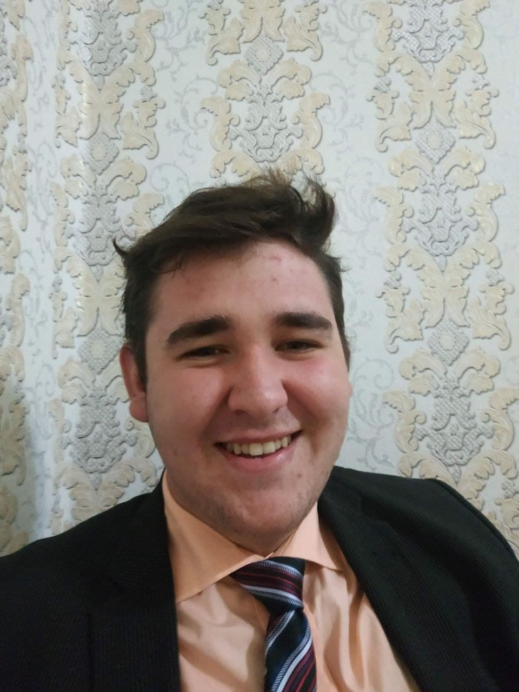
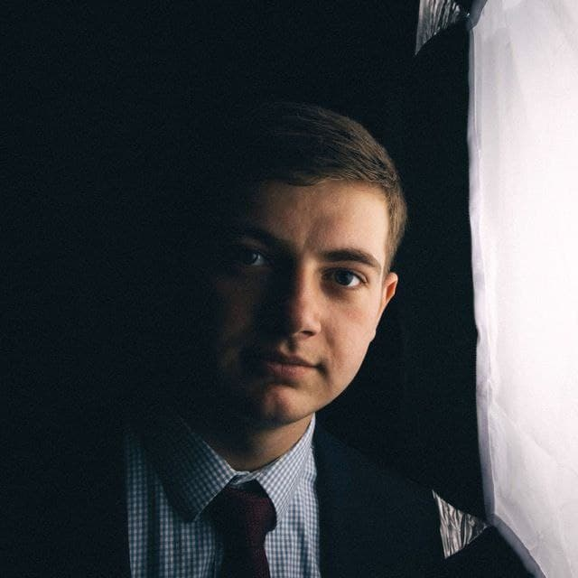
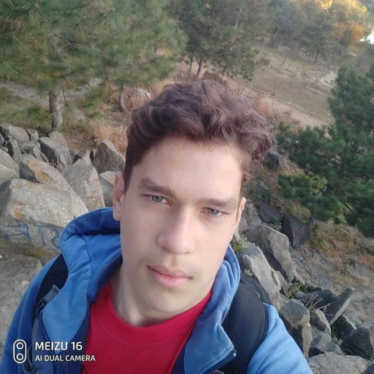
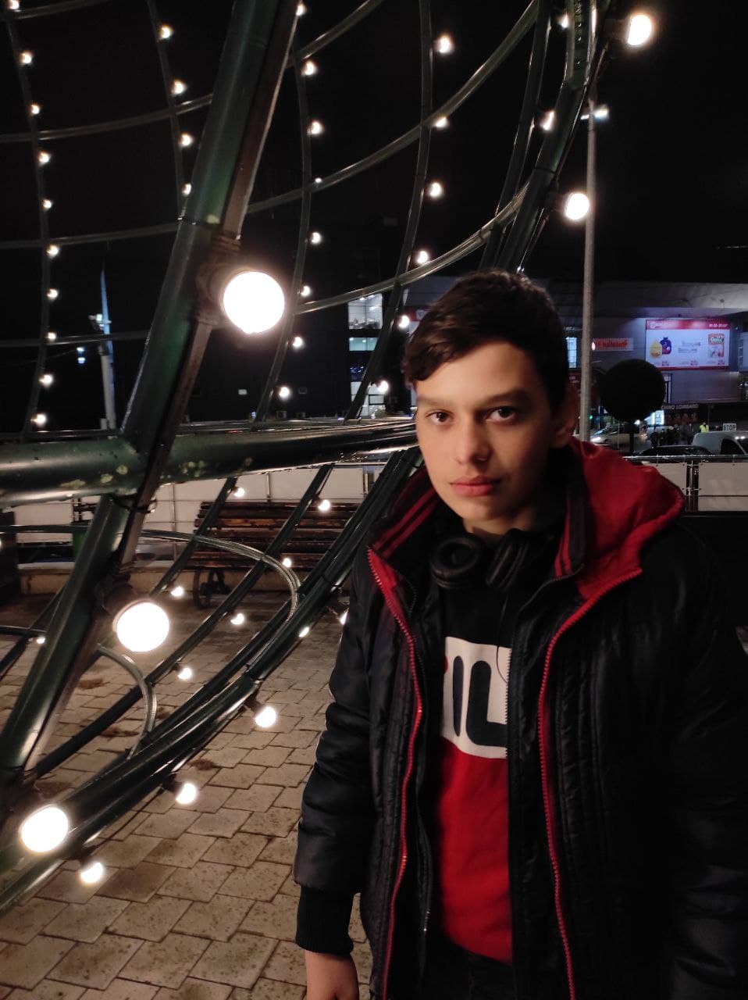
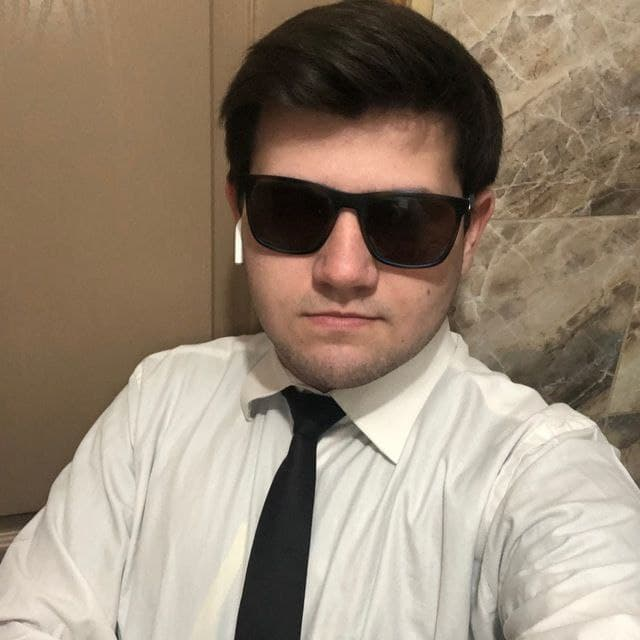

-
Сухарик
-
Сашка
-
Юрка
-
Славчик
-
Денисик
Класный чел, перспективный, весёлый, целеустремлённый. Живёт с родителями, закончил 9 классов и пошёл работать с папой. Обычно серьёзен и задумчив. Предпочитает общаться с людьми на 60% похожих на него самого. Любит рофлить над людьми, выкупает юмор и не обижается. Сам по себе добрый и щедрый к друзьям. Очень любит своих родителей. Знаком с ним с 4 лет. Очень его уважаю, стараюсь ровняться на него.
Сашка прикольный мужик, помогает содержать семью, в свои 20 уже имеет BMW 2008 года, и прибыльную работу. Тоже живёт с родителями, зокончил также 9 классов и пошёл работать с батей. Сам по себе добрый, гостепреимный и надёжный. Помню как угостил плацындой за 24 лея и потом припоминал это 2 года. Ну а так он очень хороший и очень нравится. Знаком с ним уже 4 года.
Юра тоже один из моих хороших друзей. Он весёлый и позитивныё. Он закончил 9 классов, а сейчас у чется на первом году обучения, на повара. С ним приятно проводить время и вообще годный чел. Знаком с ним уже 5 месяцев.
Славик это прикольный челик, обычно весёлый и жизне радостный, но может и обидется на Юру. Он учится в 7 классе, мечтает стать кондитером, и печь мне каждый день торты, наверное. Общительный и открытый, любит музыку. Тоже знаком с ним 5 месяцев.
Ну и как же без Дениса. Ну что можно сказать, весёлый, позетивный, часто переобувается, а так мечта, а не друг. Как и многие тоже закончил 9 клссов и попол на стройку. Сам по себе он прикольный подстраивается под людей и чувствет отмосверу, хорошу шутит и любит рофлить над Сухариком. Знаком с ним уже 4 года.
